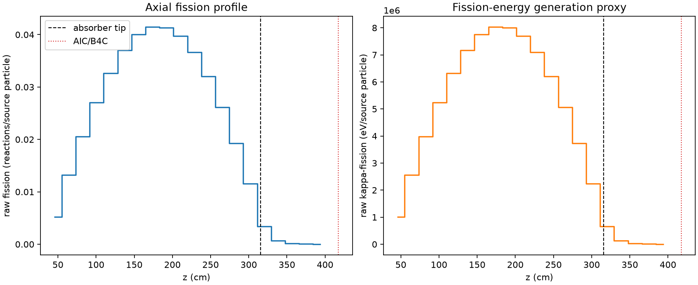
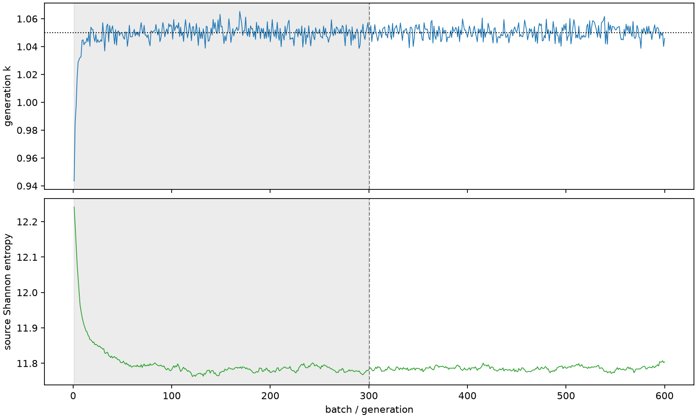

| field | value |
|---|---|
| experiment | V2-STAGE_256_OGRENCI_01-0010 |
| k | 1.0500570658282726 |
| MC standard error | 0.00018795239046658565 |
| seconds | 1020.3573915190063 |
| acceptance | not_assessed |
| convergence | review_required |
Completed is output integrity only; physical and statistical review required. Zero tallies do not prove zero production or zero uncertainty.
| diagnostic | value |
|---|---|
| geometric fuel voxels | 5280 |
| zero fission tally voxels | 0 |
| low signal fuel voxels | 431 |
| low signal fission share | 8.287426448871369e-05 |
| low signal kappa share | 8.29131120172075e-05 |
| important fission share | 0.9500306585361045 |
| previous filter included | 4849 |
| duration estimate s | 1562.5173488400023 |
| actual minus estimate s | -542.159957320996 |
| fission relative MC error | statistics |
|---|---|
| all_geometric_fuel | {"voxels": 5280, "positive_mean_voxels": 5280, "zero_mean_voxels": 0, "undefined_relative_error_voxels": 0, "median": 0.010171938421139528, "p95": 0.3004163741127976, "maximum": 0.822560706287249} |
| low_signal | {"voxels": 431, "positive_mean_voxels": 431, "zero_mean_voxels": 0, "undefined_relative_error_voxels": 0, "median": 0.35600275843863755, "p95": 0.5355022752192943, "maximum": 0.822560706287249} |
| important_95pct | {"voxels": 3426, "positive_mean_voxels": 3426, "zero_mean_voxels": 0, "undefined_relative_error_voxels": 0, "median": 0.008434250846522783, "p95": 0.012921860162109904, "maximum": 0.01627854042147119} |
| outside_previous_filter | {"voxels": 431, "positive_mean_voxels": 431, "zero_mean_voxels": 0, "undefined_relative_error_voxels": 0, "median": 0.35600275843863755, "p95": 0.5355022752192943, "maximum": 0.822560706287249} |
| kappa_fission relative MC error | statistics |
|---|---|
| all_geometric_fuel | {"voxels": 5280, "positive_mean_voxels": 5280, "zero_mean_voxels": 0, "undefined_relative_error_voxels": 0, "median": 0.010159352149955926, "p95": 0.3000292724023098, "maximum": 0.8218517832562471} |
| low_signal | {"voxels": 431, "positive_mean_voxels": 431, "zero_mean_voxels": 0, "undefined_relative_error_voxels": 0, "median": 0.3546123310398268, "p95": 0.5348037175267357, "maximum": 0.8218517832562471} |
| important_95pct | {"voxels": 3426, "positive_mean_voxels": 3426, "zero_mean_voxels": 0, "undefined_relative_error_voxels": 0, "median": 0.008423631151324603, "p95": 0.012906248874886256, "maximum": 0.01625760823020549} |
| outside_previous_filter | {"voxels": 431, "positive_mean_voxels": 431, "zero_mean_voxels": 0, "undefined_relative_error_voxels": 0, "median": 0.3546123310398268, "p95": 0.5348037175267357, "maximum": 0.8218517832562471} |
| axial bin | fission share | kappa-fission share |
|---|---|---|
| 1 | 0.012233617948589763 | 0.012234261910280273 |
| 2 | 0.030926927678693567 | 0.03092680972199608 |
| 3 | 0.04793828285354259 | 0.0479380026281371 |
| 4 | 0.06322723266095426 | 0.06322702489645528 |
| 5 | 0.07626217028841556 | 0.07626196966246235 |
| 6 | 0.0864066932949428 | 0.08640632692131807 |
| 7 | 0.09352113663149987 | 0.09352064450983559 |
| 8 | 0.09674770901729816 | 0.0967476621750632 |
| 9 | 0.09655670819287987 | 0.09655635777645456 |
| 10 | 0.09280974544909891 | 0.09280914932167932 |
| 11 | 0.08546997244360859 | 0.08546951713999065 |
| 12 | 0.07477934952313914 | 0.07477921214599613 |
| 13 | 0.06110844926667591 | 0.06110819273931553 |
| 14 | 0.04493313962718381 | 0.044933181124292024 |
| 15 | 0.027024384201054734 | 0.027024420072874873 |
| 16 | 0.007948511885776941 | 0.007950343222071554 |
| 17 | 0.0016008494518738512 | 0.0016015562983251038 |
| 18 | 0.00038676890188706845 | 0.00038695721389368293 |
| 19 | 9.681002607399602e-05 | 9.68625489840783e-05 |
| 20 | 2.1540656810597806e-05 | 2.1547970574598802e-05 |
Histories include the inactive-to-active transition at batch 300. kappa-fission approximates fission energy production, not total heat deposition.

